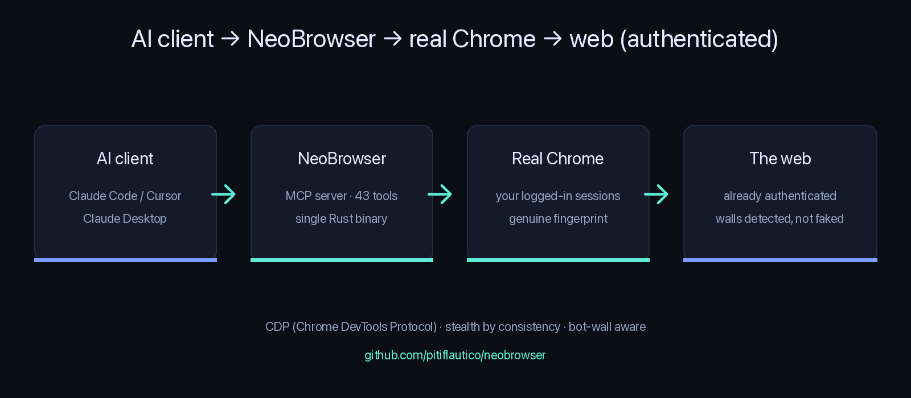

An MCP server that drives the real Google Chrome binary with your logged-in profile. It wins the fingerprint game, moves the mouse like a human, and lands already authenticated — so it isn't flagged like a stock headless bot.
Honest scope: NeoBrowser defeats fingerprint detection, not challenges. reCAPTCHA, Turnstile and behavioral systems can still put up a wall — so it detects the wall and hands control back with a real-session or human path, instead of pretending to be invisible.

Decrypt + inject cookies from your real Chrome profile (macOS Keychain / Linux secret-service / Windows DPAPI). Opt-in; identity cookies excluded so your browser isn't logged out.
Passes bot.sannysoft with the host's real fingerprint — no spoofed WebGL or UA mismatch. CI runs the checks against a real Chrome on every push.
Clicks travel to the target along an eased, jittered path with human-cadence pauses; typing can be per-key with realistic timing.
Detects CAPTCHAs, consent gates, rate-limits and login walls on any site and tells the model how to react.
Text, images and video across several engines — walled sources are detected and skipped, results merged.
Navigate, forms, upload/download, extract, multi-tab, playbooks, search — a single ~5 MB static binary, no runtime.
One isolated CDP connection per tab, typed timeouts, self-healing recovery — and a graceful shutdown that never leaves an orphaned Chrome behind.
A neutral harness drives NeoBrowser and Playwright MCP through the same task matrix — nothing tuned to make either win:
| Functional tasks | Avg latency | Crashes | |
|---|---|---|---|
| NeoBrowser | 9/9 | 4760 ms | 0 |
| Playwright MCP | 7/9 | 2597 ms | 0 |
Playwright MCP is faster; NeoBrowser passes upload and session persistence, which Playwright MCP can't do — and on adversarial pages both were walled equally (no "evades better" claim). Full methodology: bench/compare.md.
New: I ran both tools against live bot detection — the honest table (sannysoft 11/11 vs 10/11, both blocked by Cloudflare, real latencies). Full head-to-head with browser-use too: NeoBrowser vs Playwright MCP vs browser-use.
| NeoBrowser | Playwright MCP | browser-use | |
|---|---|---|---|
| Real Chrome binary | ✓ | bundled Chromium | ⚠️ |
| Real logged-in sessions | ✓ | ✗ | ✗ |
| Genuine fingerprint (bot.sannysoft) | ✓ | ✗ | partial |
| Human-like mouse / typing | ✓ | ✗ | ✗ |
| Bot-wall detection | ✓ | ✗ | ✗ |
| Single static binary | ✓ | Node + browsers | ✗ |
Run the one-liner above, or grab a binary from Releases (checksummed & signed with build provenance).
{ "mcpServers": { "neobrowser":
{ "command": "neobrowser" } } }
Ask your model to navigate, fill forms, upload, search — see the tool reference.